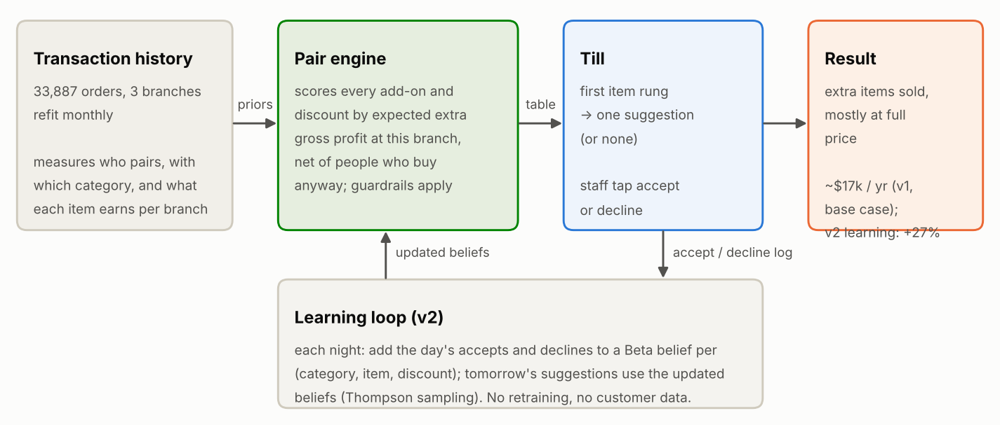

<section id="how" data-transition="fade" style="background:#fcfcfb;color:#1c211a;font-family:'IBM Plex Sans', Arial, sans-serif;padding:128px;display:flex;flex-direction:column;gap:32px">
<p style="font-size:24px;font-weight:600;letter-spacing:3px;text-transform:uppercase;color:#3f6b2f">How it works</p>
<h2 style="font-family:'Bricolage Grotesque', Arial, sans-serif;font-size:72px;font-weight:800;line-height:1.1;letter-spacing:-1px">Pick the add-on that earns the most</h2>

<aside>The engine uses past orders to know what people add. For each order it picks the add-on with the most extra profit at that branch. Staff tap accept or decline, and the engine learns from that every night.</aside>
</section>
